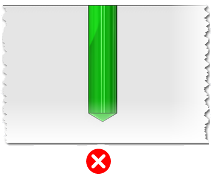
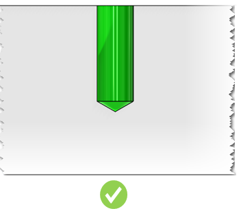
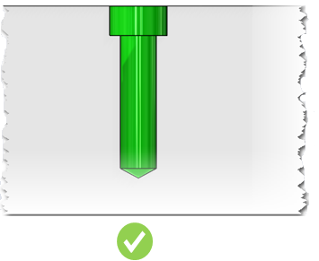
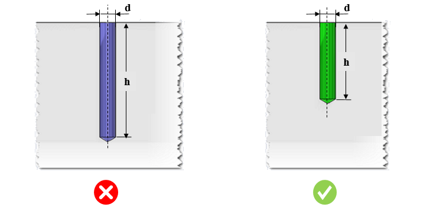

加工が困難な、深くて小径の穴の作成は避けてください。
小径ドリルはぶれやすく、破損しやすいため、量産加工には適していません。
深穴の加工では、切りくずの排出が困難になります。
細くて深い穴は工具のたわみを引き起こし、破損しやすくなるため、工具コストが増加します。
深穴加工にはガンドリルなどの特殊加工が必要となり、加工コストが増加します。
細くて深い穴は避けてください。

穴径を大きくしてください。

可能であれば、ボーリング加工による穴を使用してください。

一般的な指針として、穴の深さと直径の比率は 8.0 を超えないようにしてください。場合によっては、部品や工具材料に応じて、この比率を 3.0 程度まで低く抑えることが望まれます。
DFMPro は、設定可能な所定の値に対してアスペクト比をチェックすることで、深穴を識別します。アスペクト比は、穴の深さを穴径で割った比率として定義されます。

ここで、
d = 穴径
h = 穴の深さ
注記:
ドリル工具はデータベースで構成されています。ルールマネージャーダイアログボックスでドリル径を確認するには、標準穴径を編集してください。
最大ドリル工具径は、標準穴径ルール構成で選択されている単位選択オプションに基づいて解析に考慮されます。